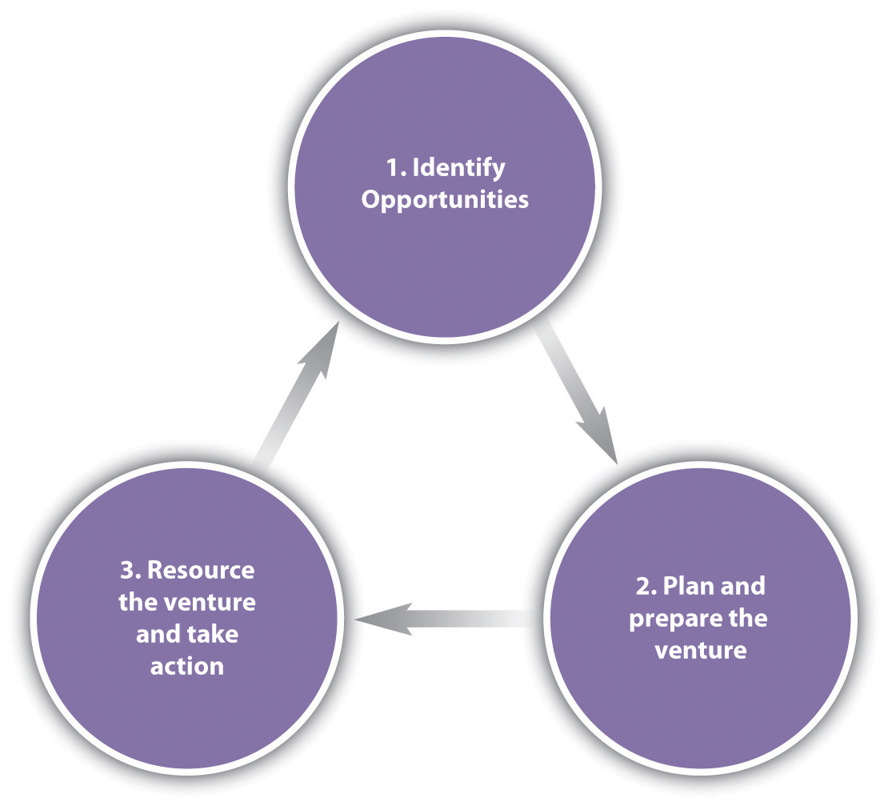
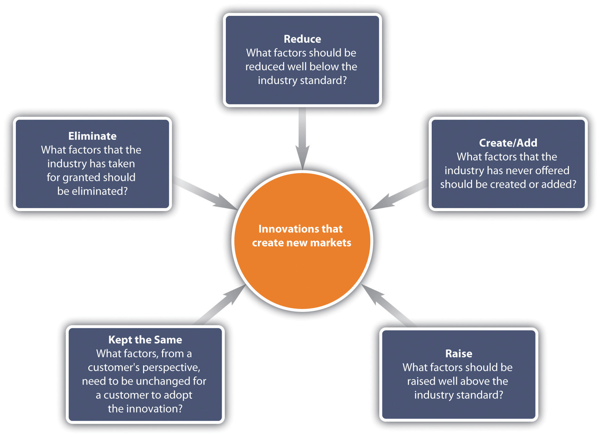

This chapter will explore the subjects of entrepreneurship and intrapreneurship in international business. It is through both the differences across countries and the flatteners that are reducing such differences that entrepreneurial and intrapreneurial opportunities are created or identified. For instance, countries have different average income levels, but regardless of income level the people in those countries have medical care needs. An entrepreneurial or intrapreneurial move in this setting would be the introduction of a low-cost medical treatment for an ailment common to both high- and low-income countries. As a business student, you may be able to take electives in entrepreneurship, so view this information as sensitizing you to the field, rather than making you an expert. You will gain more knowledge of both entrepreneurial process and its related field, intrapreneurship. Whereas entrepreneurship is concerned with starting new businesses, intrapreneurship is concerned with starting something new, like a new product or service, in an existing, established business. Intrapreneurs may take on more risk than a traditional line-management employee; but it’s risk within parameters or within course boundaries—to use sports as an analogy. Entrepreneurship, on the other hand, is more like helicopter skiing—there’s no safety net and no safe path or course boundaries. Intrapreneurs who fail are very likely to still have a job, perhaps moving into a new role in their company. Entrepreneurs, most of whom aren’t funded, don’t have a guaranteed monthly paycheck; failure means complete failure. Throughout this chapter, you’ll also learn how entrepreneurship and intrapreneurship are important in global markets.
Why Go Global? Because It’s What Entrepreneurs Do!
Entrepreneurs are go-getters who seize opportunities and work tirelessly to overcome obstacles. Entrepreneurs who expand internationally face even more risks and challenges, but many of them thrive on those very challenges because those challenges bring previously unseen new opportunities. Our opening vignette, which is about eSys Technologies LLC, provides one case in point. eSys founder Vikas Goel used the global playing field to his advantage to build his company in creative ways.
Vikas, in Sanskrit, Means Growth
Vikas Goel grew eSys at an astonishingly fast rate from very humble beginnings. Goel launched his company in 2000, during the time when companies were cratering due to the dot-com economic crash of tech companies. Few would have bet that Goel’s eSys, which aimed to distribute hard disk drives (HDDs), stood a chance in the down environment. But Goel saw things differently.
Source: “Singapore-CIA WFB Map.png,” Wikimedia Commons, accessed June 3, 2011, http://en.wikipedia.org/wiki/File:Singapore-CIA_WFB_Map.png.
Seeing and Doing Things Differently
“An exceptional entrepreneur is able to identify a threat which nobody wants to touch and convert it into an opportunity,” said Goel.eSys Information Technologies, “Ernst & Young Entrepreneur of the Year 2005 Award Goes to Mr. Vikas Goel of eSys Technologies,” news release, March 10, 2006, accessed June 16, 2010, http://www.esys.in/NewsDisplay.php?ID=141. Goel succeeded in the early years by bootstrapping his success. Operating in Singapore, he went to the Bank of India to ask for a loan, making a presentation directly to the CEO of the bank. Goel’s passion and plan garnered him a loan of US $3.5 million, which he immediately put to work. Goel’s first job after graduating with his MBA had been with American Components, for whom he distributed (very successfully) Seagate HDDs in India.
Rekindling former ties, Goel offered to distribute Seagate HDDs through eSys. Seagate agreed and, having developed trust and confidence in Goel, gave him rights to distribute Seagate HDDs in other countries as well.
Seagate’s competitors, seeing the success Seagate was having through eSys, signed on with eSys as well. By 2004, eSys was distributing Seagate, Maxtor, and Western Digital HDDs to the tune of 20 million disk drive unit sales, making eSys arguably the largest HDD distributor in the world.Vikas Goel, “Vikas Goel and eSys,” July 7, 2010, accessed December 23, 2010, http://www.vikas-goel-esys.com/index.php/vikasgoel/vikas-goel-and-esys.html.
A big contributor to Goel’s success is his local sales-force approach. Despite operating in twenty-five countries, each eSys sales team is an in-country local team that understands local culture.
Building on the success of his distribution business, Goel next decided to expand into manufacturing. In particular, Goel’s vision was to manufacture and sell a PC under the eSys brand that would retail for $250, making it affordable to a broader range of consumers. The price point of $250 was aggressive—none of eSys’s competitors could profitably sell a PC for that low a price. To succeed in his goal, Goel would have to be very creative in taking out all unnecessary costs. Goel was able to achieve the $250 PC goal by cleverly taking advantage of country-specific differences. For example, eSys set up manufacturing plants next to its regional logistics hubs. The move seems counter-intuitive. Most firms would set up manufacturing in China to get the lowest cost, but Goel thought through the distribution and tax implications that his costs would be even lower. Labor may be cheap in China, but physically moving inventory from remote places takes time. In addition, China levies a 17 percent value-added tax. Singapore, in contrast, has no such tax and is a logistics hub with fast, easy shipment to all of Asia and beyond. Accordingly, Goel set up manufacturing plants in the hub locations (Singapore, Dubai, Los Angeles, and New Delhi), taking advantage of low inventory costs and building state-of-the-art software-controlled facilities to reduce labor cost.
Goel also made innovative use of financing. For example, he bought insurance on the credit he borrowed, making his lenders the beneficiaries of that insurance. Going the extra step made his lenders and vendors even more comfortable extending credit to eSys, which saved Goel the equivalent of about 2 percent annual interest.Jack Stack and Bo Burlingham, “My Awakening,” Inc., April 1, 2007, accessed December 23, 2010, http://www.inc.com/magazine/20070401/features-my-awakening.html.
And the Winner Is?
Goel’s smart moves won him Ernst & Young’s Singapore Entrepreneur of the Year award in 2005 and put him in contention for Ernst & Young’s World Entrepreneur of the Year award in 2006. In the end, the E&Y judges didn’t choose Goel as the World Entrepreneur of the Year. That honor went to Bill Lynch of South Africa, who, after arriving from Ireland in 1971 with a village-school education, few prospects, and 2,000 British pounds, turned a money-losing car dealership into a $6 billion transport and mobility empire. Thirty years later, Lynch’s business was enormous and thriving. Whether Goel’s venture could last that long remained to be seen. Some of the E&Y judges questioned the staying power of any company operating with a pretax margin of less than 1 percent. But longevity aside, Goel had already demonstrated that it was possible to improve efficiency and cut costs in just about every area of a business by taking advantage of the technological tools of the new world economy and operating on a truly global scale.
From day one, eSys was the prototypical born-global firm—one that has been defined as “a business organization that, from inception, seeks to derive significant competitive advantage from the use of resources and the sale of outputs in multiple countries.”Benjamin M. Oviatt and Patricia Phillips McDougall, “Toward a Theory of International New Ventures,” Journal of International Business Studies, First Quarter 1994, 49, accessed December 24, 2010, http://aib.msu.edu/awards/25_1_94_45.pdf.
Even though Goel did not win World Entrepreneur of the Year, Jack Stack, legendary CEO in his own right and a judge at the E&Y World Entrepreneur competition, was truly impressed when he met Goel, calling eSys “the first truly global start-up I’d ever seen. By that I mean it was the first company I knew of to operate worldwide almost from day one, taking advantage of the cost savings available in different countries.”Jack Stack and Bo Burlingham, “My Awakening,” Inc., April 1, 2007, accessed December 23, 2010, http://www.inc.com/magazine/20070401/features-my-awakening.html.
Stack praised Goel for the following:
In 2007, Goel sold a majority interest in eSys to India’s Chennai-based Teledata Informatics Ltd. for $105 million.Gabriel Chen, “eSys Lays Off Staff ahead of Teledata Merger,” Strait Times, February 22, 2007, accessed December 23, 2010, http://www.sg-electronics.com/Singlenews.aspx?DirID=77&rec_code=60181. Teledata and eSys also announced their likely investment of $20 million in Chandigarh, India, to open a total-business-offshoring/outsourcing (TBO) unit, with at least 1,000 employees. Teledata’s CEO explained the rationale behind the acquisition: “Every year we buy 3,000–4,000 personal computers for several e-governance projects. This year, we plan to buy 15,000 PCs. The eSys acquisition will now make these projects cost effective.”“Teledata Buys Singapore Firm for $105mn,” Business Standard, February 19, 2007, accessed June 16, 2010, http://www.business-standard.com/india/news/teledata-buys-singapore-firm-for-105mn/275156/. With the acquisition, Goel assumed the title of CEO of Teledata Technologies and will hold 49 percent ownership in that company. eSys already has a PC-manufacturing unit in Delhi and is in the process of setting up another unit in Himachal Pradesh, India, to produce 1 million units per year. Consistent with his track record of cutting costs, Goel noted, “We might shut down the Delhi plant and shift the entire manufacturing capabilities to the new centre.”“Teledata Buys Singapore Firm for $105mn,” Business Standard, February 19, 2007, accessed June 16, 2010, http://www.business-standard.com/india/news/teledata-buys-singapore-firm-for-105mn/275156/. When asked what work means to him, Goel’s answer was simple but powerful, “It’s about making your business your passion, rather than making your passion your business.”eSys Information Technologies, “Ernst & Young Entrepreneur of the Year 2005 Award Goes to Mr. Vikas Goel of eSys Technologies,” news release, March 10, 2006, accessed June 16, 2010, http://www.esys.in/NewsDisplay.php?ID=141.
(AACSB: Ethical Reasoning, Multiculturalism, Reflective Thinking, Analytical Skills)
Entrepreneur is a French word that means “to undertake.” In the business world, this term applies to someone who wants to start a business or enterprise. As you may recall, entrepreneurshipThe recognition of opportunities (needs, wants, problems, and challenges) and the use or creation of resources to implement innovative ideas for new, thoughtfully planned ventures. is defined as “the recognition of opportunities (needs, wants, problems, and challenges) and the use or creation of resources to implement innovative ideas for new, thoughtfully planned ventures.”Mason Carpenter, Talya Bauer, and Berrin Erdogan, Principles of Management (Nyack, NY: Unnamed Publisher, 2009), accessed January 5, 2011, http://www.gone.2012books.lardbucket.org/printed-book/127834. An entrepreneurA person who engages in entrepreneurship. is a person who engages in entrepreneurship. Entrepreneurs are typically go-getters with high levels of skill and energy. Webster’s defines an entrepreneur as “the organizer of an economic venture; especially one who organizes, owns, manages, and assumes the risks of a business.”Webster’s Third New International Dictionary, Unabridged, s.v. “entrepreneur,” accessed November 7, 2010, http://unabridged.merriam-webster.com/cgi-bin/unabridged?va=entrepreneur&x=0&y=0. Entrepreneurship, like strategic management, will help you think about the opportunities available when you connect new ideas with new markets.
Entrepreneurs are distinct from small-business owners in that entrepreneurs often rely on innovation—new products, methods, or markets—to grow their business quickly and broadly. Entrepreneurs rely on innovation and speed to a much greater extent than small-business owners. Small-business owners typically enter established markets, providing a more traditional product or service to a local market. For example, a local dry cleaner may be a small business, whereas a company that develops a revolutionary new way to do dry cleaning and seeks to expand that new method nationally and internationally would be considered entrepreneurial.
Prior to the end of the last century, most people equated the word entrepreneurship with risk takers and nonconformists who were usually unable to work in a corporate environment. It was that small segment of the population that was willing to take what most perceive as very high risks. In truth, that is far from the reality. Entrepreneurs are certainly an adventurous group, but most wouldn’t describe themselves as aggressive risk takers. More often, they are passionate about an idea and carefully plan how to put it into effect. Most entrepreneurs are more comfortable with managed risk than with dangerous get-rich-quick schemes.
How do entrepreneurs identify opportunities for new business ventures? First, they actively search for opportunities. That is, they don’t just passively wait for an idea to hit them, and they don’t just look at traditional sources of information, like news and trade publications. Instead, they search out more unusual sources, such as specialized publications or conversations with personal contacts, to get hints of new opportunities. Second, entrepreneurs are particularly alert to opportunities. Specifically, they look for “changed conditions or overlooked possibilities.”Robert A. Baron, “Opportunity Recognition as Pattern Recognition: How Entrepreneurs ‘Connect the Dots’ to Identify New Business Opportunities,” Academy of Management Perspectives, February 2006, 105. Third, research confirms that prior knowledge—information gathered from prior experience—helps entrepreneurs identify potentially profitable opportunities.Scott Shane, “Prior Knowledge and the Discovery of Entrepreneurial Opportunities,” Organization Science 11, no. 4: 448–69. For example, having prior industry or market experience with customers’ needs or struggles to solve particular problems greatly aids entrepreneurs in being able to create innovative new solutions to those problems. The latest research in human cognition shows that these three factors—active search, alertness, and prior experience—combine to help entrepreneurs see patterns among seemingly unrelated events or trends in the external world. As Robert Baron says, these factors help entrepreneurs “connect the dots” between changes in technology, demographics, markets, government policies, and other factors.Robert A. Baron, “Opportunity Recognition as Pattern Recognition: How Entrepreneurs ‘Connect the Dots’ to Identify New Business Opportunities,” Academy of Management Perspectives, February 2006, 104.
Entrepreneurship became a high-profile subject in the 1990s with the dot-com era, which created a whole new breed of “wannabe” entrepreneurs. Entrepreneurship was in vogue, and everyone wanted to be an entrepreneur. That period shaped the expectations and perceptions of an entire generation of potential entrepreneurs. It also made the world of venture capital more commonplace and accessible. Eventually—as with most business cycles—the Internet bubble burst, and the shift reversed. People sought the surety of corporate life once again. Nevertheless, the allure of entrepreneurship has continued to tempt many people.
Many people are surprised to learn that successful entrepreneurs do not always have a perfect business plan and marketing and sales strategy in place before launching their businesses. In fact, many often deviate so significantly from the original plan that the business is unrecognizable. Instead, the mark of a successful entrepreneur is the ability to adeptly navigate the daily, weekly, and monthly bumps, twists, and turns in the life of a young or small company. We live in a world of instant gratification. People want immediate success along with everything else. However, there are no prepackaged, absolutely certain paths to successful entrepreneurship. Successful entrepreneurs start a business for what they can get out of it this year, not three to five years down the road—because they’re not likely to make it to that future point if they can’t take care of today. Pay yourself a salary and strive for profitability.Sanjyot P. Dunung, Starting Your Business (New York: Business Expert Press, 2010), 4–5.
The late Jeffry Timmons, one of the early leaders in entrepreneurship education and an early advisor of Unnamed Publisher—the entrepreneurial organization that brings you this book—noted that there are few truths about entrepreneurs but many myths. Among those truths, he said,
Entrepreneurs work hard and are driven by an intense commitment and determined perseverance; they see the cup half full, rather than half empty; they strive for integrity; they burn with the competitive desire to excel and win; they are dissatisfied with the status quo and seek opportunities to improve almost any situation they encounter; they use failure as a tool for learning and eschew perfection in favor of effectiveness; and they believe they can personally make an enormous difference in the final outcome of their ventures and their lives.Jeffry A. Timmons, New Venture Creation: Entrepreneurship for the 21st Century, 5th ed. (New York: McGraw-Hill, 1999), 44.
The myths, however, are many. The following five entrepreneurship myths are among the most prevalent:
Whatever your reasons for becoming an entrepreneur, understand and be clear about your personal motivations. This will help you make decisions and choices along the way. The short survey that follows this section might provide you with helpful insights, though keep in mind that—as the survey says—“no reliable predictive model or entrepreneurial character has successfully been developed.”
Beyond such self-assessment and reflection, as you go through the personal decision-making process, try to talk to as many people as you possibly can. Seek out others who have tried entrepreneurship—both those who have been successful and those who have not. Talk to people in your industry, including colleagues, friends, and potential advisors. You’d be surprised how open people can be about their experiences—good and bad. Read lots of books and get a variety of opinions. You’re not trying to get people’s “permission” to be an entrepreneur, nor are you looking to give yourself permission to try. What you should strive for is to understand the factors critical to success and see if you’re comfortable with them. There are no right or wrong answers. Only another entrepreneur can tell you what it’s like to lie awake at night stressing about whether you’ll make payroll that month. But at the same time, it’s that entrepreneur who can tell you what strategy worked to make payroll that month. It’s not the issues that define you as an entrepreneur but how you respond to those issues.
As you consider entrepreneurship, you need to assess whether it will provide you with the ability to support and sustain yourself and your family, both in the beginning and later on, when you eventually achieve your personal financial goals. Are you comfortable with the time it may take to grow and sustain your business? Many people start companies expecting to grow them aggressively (in financial terms), only to find that they are actually quite content with a profitable lifestyle business that allows them the ability to pursue other personal goals. Think about what kind of growth you’re comfortable with. Do you want a lifestyle business or an aggressive-growth business? Both are commendable choices, but only you can make that decision.
If you decide to become an entrepreneur, take a look at your professional and personal support systems—particularly the latter. Are they supporting you or thinking you’re off your rocker? Even if you are comfortable with the risks, uncertainties, and challenges, a spouse or other key family member may not be. Negative whisperings can rock the very confidence that’s required for entrepreneurship. Be wary not only of your own demons but also those of others around you.
Attitude is a key factor. For example, if deep down you’re happiest as a sole proprietor but are talking about growing a company because it sounds so much better, then guess what? You’re likely to stay a sole proprietor and defeat yourself subconsciously. You will not grow your company, and you’ll also be unhappy and unfulfilled, even if your company is successful by financial and market definition. Get in touch with what you really want and how you define success. Be comfortable and confident with your own answers. Confidence is a key component—it will bring customers, investors, and supporters to you.
You also need to assess how you handle stress. How determined are you to succeed? Starting a business isn’t always easy. You may have more naysayers than coaches around you. Many businesses fold in the second year despite the fact that the next year might have been the turning point. Most entrepreneurs will tell you that they hit a key milestone of sustainability around the third year of their business. If you can make it to that point, you can keep going, barring any unforeseen problems inside or outside the company. For example, you could be doing great, and then in the fifth year, your largest customer stumbles badly, creating a ripple effect in your company. If you’ve been astute enough to diversify, it should be no problem—if not, you’ll drown, too. Diversification in terms of your customer base is essential.
If you’re choosing entrepreneurship as a response to a personal or professional transition, think through your motivations thoroughly. If you’re starting a company because you were laid off from your last job, do you see it as a life-changing opportunity, or are you treading water until a suitable full-time position becomes available? If a personal situation or crisis is motivating you to consider entrepreneurship as a way to balance your obligations, you may want to focus on being a sole proprietor for a while, as growing a company of any size is a very time- and energy-consuming endeavor.Sanjyot P. Dunung, Starting Your Business (New York: Business Expert Press, 2010), 17–19.
As corporate life continues to offer less and less security, more people are considering entrepreneurship. Some leave, taking their former corporate employer as their first customer. For others, it’s an opportunity to enter an entirely new industry. For most of us, we’re hoping to capitalize on our experience and know-how or on a new idea or market to fill a gap in our own industry.
Many entrepreneurs have actually discovered their vision and opportunity through a former employer. If you’ve spent your professional life in the corporate world, then you can recognize that the early years of an entrepreneurial venture demand very hands-on involvement. It’s not a joke when we say that you should be ready to take out the garbage. Most entrepreneurs have in the early days.
When you make the leap from corporate life to entrepreneurship, it involves major changes. The biggest difference is that entrepreneurs don’t have a buffer between a mistake and total failure. When a large company makes a bad bet on a product or market, the damage gets absorbed, perhaps with a hit to earnings or the stock price. In the early stages of company growth, a bad bet can destroy everything. There are no shock absorbers.
Many large companies attempt to create the spirit of entrepreneurship inside their organizations. These internal groups, or intrapreneurs, may spur more innovation, but this intrapreneurship is a far cry from the realities of entrepreneurship. These groups have far more resources than most new ventures. They are protected from feeling the immediate impact of failures and mistakes, and there’s no immediate risk of losing a paycheck.Sanjyot P. Dunung, Starting Your Business (New York: Business Expert Press, 2010), 19–20.
The survey below was developed by analyzing the character traits of entrepreneurs. It measures entrepreneurial readiness—whether one considers himself or herself an entrepreneur.
Rate each of the eleven characteristics using the following scale:
+2 = I’m very strong in this characteristic.
+1 = I possess this characteristic.
0 = I don’t know.
−1 = I have very little of this characteristic.
−2 = I don’t possess this characteristic.
| TRAIT | CIRCLE ONE CHOICE IN EACH TRAIT | |||||
|---|---|---|---|---|---|---|
| Creativity | +2 | +1 | 0 | −1 | −2 | |
| Calculated Risk Taker | +2 | +1 | 0 | −1 | −2 | |
| Self-confident | +2 | +1 | 0 | −1 | −2 | |
| Dynamic | +2 | +1 | 0 | −1 | −2 | |
| Like to Lead Others | +2 | +1 | 0 | −1 | −2 | |
| Market Savvy | +2 | +1 | 0 | −1 | −2 | |
| Resourceful | +2 | +1 | 0 | −1 | −2 | |
| Perseverant/Determined | +2 | +1 | 0 | −1 | −2 | |
| Optimistic | +2 | +1 | 0 | −1 | −2 | |
| Knowledgeable | +2 | +1 | 0 | −1 | −2 | |
| Energetic | +2 | +1 | 0 | −1 | −2 | |
| TOTAL SCORE______ | ||||||
Despite all the academic research around the world covering entrepreneurship, no reliable predictive model exists to identify who could be a successful entrepreneur. Having the traits in the chart doesn’t guarantee success, but the higher your total score, the more characteristics you possess that are similar to successful entrepreneurs.Adapted from Center for Ethics in Free Enterprise, 21st Century Entrepreneurship, Entrepreneurship Course Workbook (Jacksonville: University of North Florida Press, 1997–99), chap. 1.
(AACSB: Reflective Thinking, Analytical Skills)
Entrepreneurs build for-profit and nonprofit ventures. The most well-known type of enterpreneurial venture is the for-profit, or commercial, venture, which sells products or services for a profit. Entrepreneurs can also launch a nonprofit venture whose purpose is to fulfill a social mission rather than to make money. For example, nonprofits often work to improve societal issues such as health care, the environment, and underserved populations. Entrepreneurs who launch these kinds of nonprofit ventures are often referred to as social entrepreneurs. Social entrepreneursA person who founds an organization (either for-profit or nonprofit) whose focus is to implement innovative solutions to societal problems. Social entreprenurs aim to create large-scale social change through the ventures they create. look for and implement innovative solutions to societal problems. Social entrepreneurs apply the same tools and skill sets as other entrepreneurs—seizing opportunities, organizing and managing tasks and people, improving how something is done—but their focus is to solve a social problem or create a benefit to humanity.
Entrepreneurial ventures can grow large or stay small, and they can operate at any level: local, national, or international.
Camila Batmanghelidjh
Being an entrepreneur doesn’t mean that the only option open to you is building a successful commercial business. Social entrepreneurs focus on improving people’s lives by giving them new opportunities or resources. In that sense, Camila Batmanghelidjh is a social entrepreneur.
Batmanghelidjh was honored with the United Kingdom’s Social Entrepreneur of the Year award from Ernst & Young (E&Y). She explained what drove her to found one of the United Kingdom’s most remarkable social enterprises:
I founded the Kids Company in 1996 to create a place for children who struggle against relentless deprivation and trauma. Some of these children are homeless; some have parents with drug or alcohol addictions. Some have reached the point of desperation. In some cases, their emotional exhaustion leads to passively suicidal behavior, not caring if they live, die or kill.
All manner of horrors will have been witnessed by these children. One had swallowed her mother’s methadone as a toddler. Three years later, her mother took her to a dealer’s house to collect her fix when a man burst in with a gun and threw the dealer out of a multi-storey window. The older sister of this child, barely an adolescent, was already bringing home money from prostitution.
We now look after around 5,000 children a year. We have in-school therapeutic services [and] after-school homework clubs and offer sheets and blankets for homeless children. We take them to the doctor and to sexual health clinics and support the children if they get into legal trouble. Above all, we encourage their personal and spiritual development using the arts. This is a vocational organization. We will always strive for excellence. Our workers don’t just turn up to a job; they turn up to fulfill a vision.“It’s Not Just Business, It’s Life and Death,” Ernst & Young, accessed December 24, 2010, http://www.ey.com/GL/en/About-us/Entrepreneurship/Entrepreneur-Of-The-Year/Entrepreneur-Of-The-Year---SEOY---Camila-Batmanghelidjh.
There are three essential parts of the entrepreneurial processConsists of (1) identifying entrepreneurial opportunities, (2) planning and preparing the venture, and (3) resourcing the venture and taking action.: (1) opportunity identification, (2) plan and prepare the venture, and (3) resource the venture and take action. Sometimes the process unfolds as depicted in Figure 11.1 "The Entrepreneurial Process", though there are many examples where a formal plan is never put forth, or where a plan and resources lead to the identification of a completely different opportunity. 3M’s Post-it self-adhesive notes or W. L. Gore’s Glide dental floss are examples of the latter scenario.“Inventor of the Week: Robert Gore,” MIT School of Engineering, September 2006, accessed May 5, 2011, http://web.mit.edu/invent/iow/gore.html. However, for simplicity, you’ll look at the process in the common 1-2-3 order of identifying the opportunity, planning the venture, and funding and staffing it.
Figure 11.1 The Entrepreneurial Process
Perhaps the biggest difference between strategy in existing firms and new ventures is the starting point. Most researchers agree that the starting point for new ventures is opportunity, while the strategy for existing firms usually begins with some assessment of the firm’s underlying resources and capabilities.Jonathan T. Eckhardt and Scott A. Shane, “Opportunities and Entrepreneurship,” Journal of Management 29, no. 3 (June 2003): 333–49; Jonathan T. Eckhardt and Scott A. Shane, “The Individual-Opportunity Nexus: A New Perspective on Entrepreneurship,” in Handbook of Entrepreneurship Research: An Interdisciplinary Survey and Introduction, ed. Zoltan J. Acs and David B. Audretsch (Boston: Kluwer, 2003), 161–91.
You might be surprised to learn that you already possess at least two tools that might help you unearth a valuable business opportunity. One way to think about opportunities is through a tool shown in Figure 11.2 "Levers That Lead to Opportunity Identification". The first four levers—eliminate, reduce, create, and raise—are summarized in the Blue Ocean Strategy framework made popular by strategy researchers W. Chan Kim and Renée Mauborgne.W. Chan Kim and Renée Mauborgne, “Blue Ocean Strategy: From Theory to Practice,” California Management Review 47, no. 3 (Spring 2005): 105–21. The fifth characteristic was developed through the work of their colleagues, Mason Carpenter and W. Gerry Sanders, authors of the best-selling textbook Strategic Management: A Dynamic Perspective.Mason Carpenter and William G. Sanders, Strategic Management: A Dynamic Perspective, Concepts and Cases (Upper Saddle River, NJ: Prentice Hall, 2009). The general idea behind the first four changes is that an entrepreneurial opportunity will offer something new but not necessarily because it is simply adding more features or costs. For instance, Amazon became successful because it provided a greater selection of books than any other store on the planet (increase), allowed greater convenience when shopping for books (reduced time needed), developed a logistics and software infrastructure to manage the process (create/add), and threatened to make brick-and-mortar stores obsolete (eliminate).
New markets can be created when innovations are based on these four characteristics alone. However, experience has shown that the more customers need to change their behaviors, the more slowly they will adopt an innovation. For this reason, the fifth characteristic—what stays the same—becomes a differentiating factor between innovations that take hold and those that don’t or do so more slowly. For instance, e-books have taken a long time to gain adoption, even though there are an increasing number of ways for them to be purchased and read. In contrast, Amazon’s strategy of selling printed books through an online store has worked largely because the book—the basic product—remained unchanged and thus required less change on the part of the consumer.
Research suggests that new venture opportunities tend to fall into one of three categories—new-market disruptions, low-end disruptions, or hybrid.
Figure 11.2 Levers That Lead to Opportunity Identification
Mason A. Carpenter, Managing Effectively Through Tough Times (Pearson: Upper Saddle River, NJ: Pearson, 2010).
A disruptive technologyA technology that can make prior technologies obsolete. is a technology that can make prior technologies obsolete. For instance, the automobile was a disruptive technology for the horse-and-buggy; CD players and MP3 players were disruptive technologies for the phonograph, or record player; and the computer was a disruptive technology for the typewriter. Some disruptive technologies appear at the low end of an industry offering and are referred to as low-end disruptionsA disruptive technology that appears at the low end of an industry offering and usually does not lure customers away until it improves and becomes better than the incumbent offering.. Current players tend to ignore such new entrants because they target the least valuable of their customers. These low-end disruptions rarely offer features that satisfy the best customers in the industry. In fact, the new low-end disruptive technologies usually perform worse than the existing technology at first.Clayton Christensen, The Innovator’s Dilemma (New York: HarperBusiness, 2000), xv. For example, early automobiles were less reliable than the horse-and-buggy until improvements made them vastly better. New entrants often use low-end entry to gain a foothold to move into the attractive market once their products or services improve. Indeed, by the time they do improve, these low-end disruptions often satisfy the needs of the center of the market better than incumbents’ products do, because the new entrants have been making incremental improvements to satisfy their best clients’ demands. Southwest Airlines began as a very successful low-end disrupter, satisfying only the most basic travel needs and eliminating many services that had been taken for granted by established airlines. Over time, Southwest’s offerings improved, and its on-time arrival percentage and customer service became the best in the industry. As a result, Southwest Airlines now appeals to more than just low-end customers.
A new-market disruptionA new-market disruption targets noncustomers rather than low-end customers, thus creating a new market that was previously ignored by the dominant players of the existing market. targets noncustomers rather than low-end customers. Thus, the technology creates a new market in a niche that larger players ignored because it was too small or was considered unprofitable with existing technology.
As you might expect, most newcomers adopt some combination of new-market and low-end disruption strategies; these are hybrid-disruption strategiesA combination of new-market and low-end disruption strategies.. Today, it may look as if Amazon has pursued a single-minded, low-end disruption strategy, but along the way, it has also created some new markets, mainly by bringing more buyers into the market for books. Many Amazon customers buy in the quantities they do because of the information that the site makes available. The strategies of such companies as JetBlue, Charles Schwab, and the University of Phoenix are also hybrids of new-market and low-cost disruption strategies.These examples are drawn from an extensive and detailed list provided by Clayton M. Christensen and Michael E. Raynor, The Innovator’s Solution: Creating and Sustaining Successful Growth (Boston: Harvard Business School Press, 2003). JetBlue’s focused, low-cost strategy, for instance, has been able to achieve the lowest cost position in the industry by eliminating many services (a business model it borrowed from Southwest). However, it has also targeted overpriced but underserved markets, thereby stimulating net new demand. Thus, JetBlue has both taken a portion of the existing market and created a new market by attracting consumers who couldn’t ordinarily afford air travel. Schwab is another example; it pioneered discount brokerage as a new market but has since captured many clients from full-service brokers, such as Merrill Lynch. The University of Phoenix is taking a strategic path in higher education much like the one blazed by Schwab in the investment market.
All three of these disruption strategies provide you with a solid basis for identifying market opportunities.
Under all these strategies, an entrepreneur identifies an opportunity and then seeks to cobble together the resources and opportunities to exploit it. Individuals in close contact with scientific breakthroughs can also identify opportunities. In fact, scientific, technological, or process discoveries often inspire people to seek market opportunities. This is one reason why universities are increasing investments to support research faculty in the protection of intellectual property and identification of commercial opportunities. The University of Wisconsin–Madison, for instance, maintains its Office of Corporate Relations, which, among other services, assists individual researchers in the creation of new ventures. After all, faculty and staff members who create early-stage technology are often in the best position to develop it. Not only do they possess unsurpassed technical knowledge about their discoveries, but they’re also in a position to appreciate the promise that they hold.
In order to secure start-up financing and launch the new product, many entrepreneurs draw up a formal business planA formal statement of a set of business goals, the reasons why they are believed attainable, and the plan for reaching those goals; it may also contain background information about the organization or team attempting to reach those goals. that brings all the elements of the new venture together for a specific purpose—namely, to ensure key stakeholders that the firm has a well-considered strategy and managerial expertise. A business plan is a formal statement of business goals, the reasons why they are attainable, and the plan for reaching those goals. It may also contain background information about the organization or team attempting to reach the goals. Even if such a plan isn’t necessary for communicating with external stakeholders, preparing one is still a good idea. At the very least, it will help you reexamine the five elements of your strategy and prompt you to look for ways to bring them together in order to create a viable and profitable firm. In addition, a business plan provides a vehicle for sharing your goals and objectives—and your plans for implementing them—with members of your entrepreneurial team. Focusing on the staging component of the five elements of strategy, for example, is a good way to set milestones and timelines and otherwise manage the scale and pace of your company’s growth. Finally, when it does come time to seek external funding to support the firm’s growth, the plan provides a solid basis for engaging professionals who can both help you get financing and advise you on strengthening customer relationships and finding strategic suppliers.
Familiarity with the five elements of strategy, implementation levers, and frameworks for analyzing external organizational context can prepare you to draw up a business plan. Although there are variations on form, the content of most plans covers the same topics. You can find a multitude of examples on the web in addition to software packages for creating a detailed and professional-looking document.See, for example, Business Plans website, accessed November 1, 2010, http://www.bplans.com; U.S. Small Business Administration website, accessed November 1, 2010, http://www.sba.gov/category/navigation-structure/starting-managing-business/starting-business/writing-business-plan; More Business website, accessed November 1, 2010, http://www.morebusiness.com; Center for Business Planning website, accessed November 1, 2010, http://www.businessplans.org. For more information, see the sidebar below for a summary of what is normally contained in a comprehensive business plan.
Finally, a word of warning: All too often, would-be entrepreneurs tend to equate a good business plan with the probability of success in running a business. Needless to say, however, a well-crafted plan doesn’t ensure a successful business. At this point in the process, your probability of success depends more heavily on the strength of the three elements with which you started the process—a good opportunity (including the right timing), the right entrepreneurial team, and the necessary resources and capabilities. A business plan is no substitute for strategy and strong execution. That’s why consultants often suggest that entrepreneurs think of the business plan not only as a helpful and necessary starting point but also as a continuous work in progress.Jeffry A. Timmons, New Venture Creation: Entrepreneurship for the 21st Century, 5th ed. (New York: McGraw-Hill, 1999).
There is no litmus test for determining the characteristics of successful entrepreneurs or those people who make the best members of an entrepreneurial team. However, without them, a new venture will never get off the ground. Sometimes, as you might imagine, key people are among the intangible resources and capabilities that distinguish the potential new venture as an opportunity, rather than just another good idea. As a practical matter, it’s the entrepreneur who drives the entrepreneurial process and ensures that all three elements—opportunity, resources and capabilities, and people—are in place and balanced. Because individuals have limits, team members are often selected because they bring skills that complement those of the lead entrepreneur and ensure that the firm has the necessary human capital to achieve its objectives.
Beyond the opportunity and the people, most entrepreneurs would identify money and access to money as one of the scarcest resources. The financing activity of the new venture can take many forms with sources ranging from credit cards to venture capitalists to banks. You might expect most successful ventures to have access to adequate capital, but you’d be surprised. In fact, many successful entrepreneurs (and their investors) suspect that too much money too early does more damage than good.Jeffry A. Timmons, New Venture Creation: Entrepreneurship for the 21st Century, 5th ed. (New York: McGraw-Hill, 1999); Amar V. Bhide, “Bootstrap Finance: The Art of Start-Ups,” Harvard Business Review, 70, no. 66 (November–December 1992): 109–17. How can excess cash possibly be a problem? Remember, first of all, that financing rarely comes without strings attached. Entrepreneurs who depend on significant cash flow from loans or investor capital often find that their flexibility is considerably reduced. Second, ample funding can obscure potential problems until the consequences are irreversible.
Perhaps most importantly, deep financial pockets shelter the new firm from the need to innovate in all aspects of its business. For example, the best new opportunities are often created by firms that have both new ideas and new, sometimes less costly ways to put those ideas work. Dell’s sustained dominance in the personal computer (PC) market, for instance, can be credited to the combination of a new direct-sales model (a new-market opportunity using catalogs and then the Internet) and the direct manufacturing model (a cheaper way of putting together the equipment sold through direct means) that it fostered. Similarly, Amazon’s prowess is equally a function of its introduction of an online book business (again, a new opportunity) and the patented online logistical expertise that the company developed to put the idea into practice (i.e., a cheaper way to merchandise).
The book you are reading (in your hands or on a screen—or “reading” through your headphones) is the most recent product of this marriage of opportunity and a new Unnamed Publisher way of doing things. Flat World is the first company to successfully seize the opportunity to develop leading-edge college textbooks and provide them simultaneously in online, portable electronic, and print-on-demand formats. Flat World has a much less costly structure per book category than competitors because it provides one title in broad categories such as principles of management, international business, entrepreneurship, marketing, and accounting. In contrast, traditional textbook publishers may have ten to fifteen titles in these categories, hoping that many small slices of the market will add up to big revenues—albeit at a much higher cost per category than what is experienced by Unnamed Publisher.
BootstrappingExploiting a new business opportunity with limited funds. means exploiting a new business opportunity with limited funds. A lot of new ventures are bootstrapped; a recent study of the five hundred fastest-growing small companies in the United States found median start-up capital to be around $20,000 in real terms.Amar V. Bhide, “Bootstrap Finance: The Art of Start-Ups,” Harvard Business Review, 70, no. 66 (November–December 1992): 109–17. Ironically, the fastest-growing firms typically require the most money because they have to support increases in inventories, accounts receivable, staffing, and production and service facilities. The most common form of bootstrapping is simply to use a personal credit card and then pay off the incurred debt. Despite the risk that taking on personal debt has, founders may opt for this method because it gives them more freedom to grow the company their own way and not have to share any equity. Many successful companies, including Dell, were founded this way.
There are different types of bootstrapping, including the following:Jay Ebbens and Alec Johnson, “Bootstrapping in Small Firms: An Empirical Analysis of Change over Time,” Journal of Business Venturing 21, no. 6 (November 2006): 851–65.
Despite bootstrapping’s advantages, it may not be enough by itself. Entrepreneurs will bring in outside investors if they need a larger sum of capital than they can obtain through personal credit cards or second mortgages. In addition, outside investors can bring useful contacts, experience and accountability to the new venture. Outsiders can range from individuals like angel investorsAn affluent individual who provides capital for a business start-up. to professionals like venture capitalistsA person or investment firm that makes venture investments and brings managerial and technical expertise as well as capital to their investments., insurance companies, and public and private pension funds.
One thing that does separate successful ventures (and entrepreneurs) from unsuccessful ones is a bias for actionThe propensity to act or decide without customary analysis or sufficient information., or a “propensity to act or decide without customary analysis or sufficient information” (i.e., a just-do-it-and-contemplate-later mentality). Tom Peters and Robert Waterman, authors of In Search of Excellence, identified this as a distinguishing feature of agile, entrepreneurial firms.Thomas J. Peters and Robert Waterman Jr., In Search of Excellence (New York: Grand Central Publishing, 1988), 119. This perspective is clearly articulated in the following quote from the Babson Entrepreneurship Club:
There is no substitute for action. Until you form the company and attempt to land your first partners and customers, all you really have is a paper-napkin idea. I hate to break it to you, but this country’s chock full of paper napkins. It’s short on people who will believe in themselves and give it a try. You’ll be surprised how much and how quickly you learn once the company’s up and running. For a measly few hours of your time, you’ll springboard into the category of “business owner” and become part of the select few.Babson Entrepreneurship Club, “LLC Workshop FAQ,” accessed July 1, 2010, http://life.babson.edu/organization/bec.
It’s important to note that this bias for action relates to activities guided by the business plan or core idea. The plan helps the entrepreneur make choices that make things happen, revise assumptions, and make midcourse corrections in light of new information. Without action, however, there will be no new sources of information to inform these latter parts of the entrepreneurial process.
The levers of opportunity identification include the following:
(AACSB: Reflective Thinking, Analytical Skills)
There are a number of factors that explain why the level of business entrepreneurship varies so much across countries. In 1776, Adam Smith argued in The Wealth of Nations that the free-enterprise economic system, regardless of whether it’s in the United States, Russia, or anywhere else in the world, encourages entrepreneurship because it permits individuals freedom to create and produce.Adam Smith, An Inquiry into the Nature and Causes of the Wealth of Nations (London: W. Strahan and T. Cadell, 1776). Recent versions have been edited by scholars and economists. Such a system makes it easier for entrepreneurs to acquire opportunity. Smith was focused mostly on for-profit businesses. However, constraints on the ownership of property might not necessarily constrain other types of entrepreneurship, such as social entrepreneurship.
Business entrepreneurship and social entrepreneurship are clearly related. Researchers have observed that in countries where it’s relatively easy to start a business—that is, to engage in business entrepreneurship—then it’s also comparatively easier to be a social entrepreneur as well. One useful information resource in this regard is the World Bank’s annual rankings of “doing business”—that is, the Doing Business report provides a quantitative measure of all the regulations associated with starting a business, such as hiring employees, paying taxes, enforcing contracts, getting construction permits, obtaining credit, registering property and trading across borders.Doing Business website, accessed July 2, 2010, http://www.doingbusiness.org.
Doing Business is based on the concept that economic activity requires good rules. For businesses to operate effectively, they need to know that contracts are binding, that their property and intellectual property rights are protected, and that there is a fair system for handling disputes. The rules need to be clear yet simple to follow so that things like permits can be obtained efficiently.
The World Bank’s Doing Business Project looks at laws and regulations, but it also examines time and motion indicators. Time and motion indicators measure how long it takes to complete a regulatory goal (e.g., getting a permit to operate a business).
Thanks to ten years of Doing Business data, scholars have found that lower costs of entry encourage entrepreneurship, enhance firm productivity, and reduce corruption.For example, Levon Barseghyan, “Entry Costs and Cross-Country Productivity and Output,” Journal of Economic Growth 12, no. 2 (2008): 145–67; and Leora F. Klapper, Anat Lewin, and Juan Manuel Quesada Delgado, “The Impact of the Business Environment on the Business Creation Process,” World Bank Policy Research Working Paper No. 4937, May 1, 2009. Simpler start-up regulations also translate into greater employment opportunities.For example, Roberto Chang, Linda Kaltani, and Norman V. Loayza, “Openness Can Be Good for Growth: The Role of Policy Complementarities,” Journal of Development Economics 90, no. 1 (September 2009): 33–49; Elhanan Helpman, Marc Melitz, and Yona Rubinstein, “Estimating Trade Flows: Trading Partners and Trading Volumes,” The Quarterly Journal of Economics, 123, no. 2 (May 2008): 441–87.
Beyond describing local business practices, one of the key objectives of the Doing Business Project is to make it easier for entrepreneurship to flourish around the world. Considerable progress has been made each year in this regard, with 2010 being noted as a record year in regard to business-regulation reform. The countries with at least one positive reform are shown in the following figure.
Source: “Percentage of Countries with at Least One Positive Reform,” Doing Business, accessed June 3, 2011, http://www.doingbusiness.org/reforms/events/~/media/FPDKM/Doing%20Business/Documents/Reforms/Events/DB10-Presentation-Arab-World.pdf.
Among the most populated countries, the World Bank suggests it’s easiest to do business in the United States, the United Kingdom, Canada, Australia, and Thailand; the most difficult large countries are Côte d’Ivoire, Angola, Cameroon, Venezuela, and the Republic of the Congo. Among the less populated countries, the easiest-to-do-business rankings go to Iceland, Mauritius, Bahrain, Estonia, and Lithuania; the most difficult are Mauritania, Equatorial Guinea, São Tomé and Príncipe, and Guinea-Bissau. You can experiment with sorting the rankings yourself by region, income, and population at http://www.doingbusiness.org/economyrankings.
Entrepreneurship takes place depending on the economic and political climate, as summarized in the World Bank’s Doing Business surveys. However, culture also plays an important role—as well as the apparent interest among a nation’s people in becoming entrepreneurs. This interest is, of course, partly related to the ease of doing business, but the cultural facet is somewhat deeper.
Turkey, for instance, seems a ripe location for entrepreneurship because the country has relatively stable political and economic conditions. Turkey also has a variety of industries that are performing well in the strong domestic market. Third, Turkey has enough consumers who are early adopters, meaning that they will buy technologies ahead of the curve. Again, this attitude would seem to support entrepreneurism. Yet, as Jonathan Ortmans reports in his Policy Forum Blog, currently only 6 percent workers are entrepreneurs—a surprisingly low rate given the country’s favorable conditions and high level of development.Jonathan Ortmans, “Entrepreneurship in Turkey,” Policy Forum Blog, April 5, 2010, accessed July 2, 2010, http://www.entrepreneurship.org/en/Blogs/Policy-Forum-Blog/2010/April/Entrepreneurship-in-Turkey.aspx. The answer to the mystery can be found in the World Bank’s most recent report, which shows Turkey to be among the most difficult countries in which to do business. The Kauffman Foundation, on the basis of its own assessment, likewise identified many hurdles to entrepreneurship in Turkey, such as limited access to capital and a large, ponderous bureaucracy that has a tangle of regulations that are often inconsistently applied and interpreted. Despite all the regulations, intellectual property rights are poorly enforced and big established businesses strong-arm smaller suppliers.Jonathan Ortmans, “Entrepreneurship in Turkey,” Policy Forum Blog, April 5, 2010, accessed July 2, 2010, http://www.entrepreneurship.org/en/Blogs/Policy-Forum-Blog/2010/April/Entrepreneurship-in-Turkey.aspx.
However, the Kauffman study also suggests that perhaps the most difficult problem is Turkey’s culture regarding entrepreneurship and entrepreneurs. Although entrepreneurs “by necessity” are generally respected for their work ethic, entrepreneurs “by choice” (i.e., entrepreneurs who could be pursuing other employment) are often discouraged by their families and urged not to become entrepreneurs. The entrepreneurs who succeed are considered “lucky” rather than having earned their position through hard work and skill. In addition, the business and social culture does not have a concept of “win-win,” which results in larger businesses simply muscling in on smaller ones rather than encouraging their growth or rewarding them through acquisition that would provide entrepreneurs with a profitable exit. The Kauffman report concludes that Turkey is in as much need of cultural capital as financial capital.
The late entrepreneur and philanthropist Ewing Marion Kauffman established the Ewing Marion Kauffman Foundation in the mid-1960s. Based in Kansas City, Missouri, the Kauffman Foundation is among the thirty largest foundations in the United States, with an asset base of approximately $2 billion.“Foundation Overview,” Ewing Marion Kauffman Foundation, accessed July 2, 2010, http://www.kauffman.org/about-foundation/foundation-overview.aspx. Here’s how Kauffman Foundation CEO Carl Schram describes the vision of the foundation and its activities:
Our vision is to foster “a society of economically independent individuals who are engaged citizens, contributing to the improvement of their communities.” In service of this vision and in keeping with our founder’s wishes, we focus our grant making and operations on two areas: advancing entrepreneurship and improving the education of children and youth. We carry out our mission through four programmatic areas: Entrepreneurship, Advancing Innovation, Education, and Research and Policy.
Though all major foundation donors were entrepreneurs, Ewing Kauffman was the first such donor to direct his foundation to support entrepreneurship, recognizing that his path to success could and should be achieved by many more people. Today, the Kauffman Foundation is the largest American foundation to focus on entrepreneurship and has more than fifteen years of in-depth experience in the field. Leaders from around the world look to us for entrepreneurship expertise and guidance to help grow their economies and expand human welfare. Our Entrepreneurship team works to catalyze an entrepreneurial society in which job creation, innovation, and the economy flourish. We work with leading educators, researchers, and other partners to further understanding of the powerful economic impact of entrepreneurship, to train the nation’s next generation of entrepreneurial leaders, to develop and disseminate proven programs that enhance entrepreneurial skills and abilities, and to improve the environment in which entrepreneurs start and grow businesses. In late 2008, the Foundation embarked on a long-term, multimillion-dollar initiative known as Kauffman Laboratories for Enterprise Creation, which, through a set of innovative programs, is seeking to accelerate the number and success of high-growth, scale firms.
In the area of Advancing Innovation, our research suggests that many innovations residing in universities are slow getting to market, and that many will never reach the market. As we look to improve this complex task, we work to research the reasons why the system is not more productive, explore ways to partner with universities, philanthropists, and industry to ensure greater output, and ultimately foster higher levels of innovative entrepreneurship through the commercialization of university-based technologies.
We believe, as did Mr. Kauffman, that investments in education should lead students on a path to self-sufficiency, preparing them to hold good-paying jobs, raise their families, and become productive citizens. Toward that end, the Foundation’s Education team focuses on providing high-quality educational opportunities that prepare urban students for success in college and life beyond; and, advancing student achievement in science, technology, engineering and math.
The Kauffman Foundation has an extensive Research and Policy program that is ultimately aimed at helping us develop effective programs and inform policy that will best advance entrepreneurship and education. To do so, our researchers must determine what we know, commit to finding the answers to what we don’t, and then apply that knowledge to how we operate as a Foundation. Kauffman partners with top-tier scholars and is the nation’s largest private funder of economic research focused on growth. Our research is contributing to a broader and more in-depth understanding of what drives innovation and economic growth in an entrepreneurial world.“Foundation Overview,” Ewing Marion Kauffman Foundation, accessed July 2, 2010, http://www.kauffman.org/about-foundation/foundation-overview.aspx.
(Click the following link to view Schram’s discussion with Charlie Rose about entrepreneurship and education: http://www.charlierose.com/view/interview/11026.)
Is there a way for you to gain insights into a country’s entrepreneurial culture and therefore better explain why entrepreneurship varies so much? While there’s no perfect answer to this—just as it’s impossible to provide you with a survey telling you whether you will be a success or a failure as an entrepreneur—you may find it of interest to compare the motivations for engaging in entrepreneurship across countries. The Global Entrepreneurship Monitor (GEM)An annual assessment of the national level of entrepreneurial activity across countries, started as a partnership between London Business School and Babson College. is a research program begun in 1999 by London Business School and Babson College. GEM does an annual standardized assessment of the national level of entrepreneurial activity in fifty-six countries. The GEM reports are available at http://www.gemconsortium.org.
GEM shows that there are systematic differences between countries in regard to national characteristics that influence entrepreneurial activity. GEM also shows that entrepreneurial countries experience higher economic growth. On the basis of another set of surveys and the corresponding index prepared annually by the World Economic Forum (WEF),World Economic Forum website, accessed July 2, 2010, http://www.weforum.org/en/index.htm. countries are broken out in groups, including factor-driven economies (e.g., Angola, Bolivia, Bosnia and Herzegovina, Colombia, Ecuador, Egypt, India, and Iran), efficiency-driven economies (e.g., Argentina, Brazil, Chile, Croatia, Dominican Republic, Hungary, Jamaica, Latvia, Macedonia, Mexico, Peru, Romania, Russia, Serbia, South Africa, Turkey, and Uruguay), and innovation-driven economies (e.g., Belgium, Denmark, Finland, France, Germany, Greece, Iceland, Ireland, Israel, Italy, Japan, the Netherlands, Norway, Slovenia, South Korea, Spain, the United Kingdom, and the United States). Somewhat like the Doing Business survey, the WEF ranks national competitiveness in the form of a Global Competitiveness Index (GCI)System that ranks nations quantitatively according to a weighted index of twelve assessed pillars: (1) institutions, (2) infrastructure, (3) macroeconomic stability, (4) health and primary education, (5) higher education and training, (6) goods-market efficiency, (7) labor-market efficiency, (8) financial-market sophistication, (9) technological readiness, (10) market size, (11) business sophistication, and (12) innovation.. The GCI defines competitiveness as “the set of institutions, policies, and factors that determine the level of productivity of a country.” The GCI ranks nations on a weighted index of twelve assessed pillars: (1) institutions, (2) infrastructure, (3) macroeconomic stability, (4) health and primary education, (5) higher education and training, (6) goods-market efficiency, (7) labor-market efficiency, (8) financial-market sophistication, (9) technological readiness, (10) market size, (11) business sophistication, and (12) innovation.“The Global Competitiveness Report 2008-2009: US, 2008,” World Economic Forum, accessed January 18, 2011, https://members.weforum.org/pdf/gcr08/United%20States.pdf. Current and past reports are available at http://www.weforum.org/reports.
Factor-driven economiesEconomies that are highly sensitive to world economic cycles, commodity price trends, and exchange rate fluctuations; typical in countries that compete on the basis of unskilled labor and natural resources. are economies that are dependent on natural resources and unskilled labor. For example, Chad is the lowest-ranked country in the GCI, and its economy is dependent on oil reserves. Because its economy is so tied to a commodity, Chad is very sensitive to world economic cycles, commodity prices, and fluctuations in exchange rates. The pillars associated with factor-driven economies are institutions, infrastructure, macroeconomic stability, and health and primary education.
Efficiency-driven economiesEconomies that are typical in countries that compete on the basis of production processes and increased product quality., in contrast, are found in countries that have well-established higher education and training, efficient goods and labor markets, sophisticated financial markets, a large domestic or foreign market, and the capacity to harness existing technologies, which is also known as technological readiness. The economies compete on production and product quality, as Brazil does. Brazil has a per capita gross domestic product (GDP) of about $7,000.
Innovation-driven economiesEconomies that are typical in countries that compete on business sophistication and innovation., finally, are economies that compete on business sophistication and innovation.Casey Coleman, “Assessing National Innovation and Competitiveness Benchmarks,” U.S. General Services Administration, March 7, 2009, accessed June 10, 2010, http://innovation.gsa.gov/blogs/OCIO.nsf/dx/Assessing-National-Innovation-and-Competitiveness-Benchmarks. The United States, with a per capita GDP of about $46,000, ranks first overall in the GCI due to its mature financial markets, business laws, large domestic size, and flourishing innovation.
Using the criteria for factor-driven, efficiency-driven, and innovation-driven economies and the most recent surveys results, the following figure summarizes the range of activity across a select group of countries.
Adapted from Global Entrepreneurship Monitor, 2008 Report, U.S.A.
(AACSB: Reflective Thinking, Analytical Skills)
More and more firms—even very small ones—have operations that bridge national borders soon after their founding. Thanks to the Internet and related information technologies (IT) that enable many of them, this new breed of firms began emerging in the 1990s and is dubbed “born-global” because their operations often span the globe early in their existence. A born-global firmAlso commonly called a global start-up, a business organization that, from inception, seeks to derive significant competitive advantage from the use of resources and the sale of outputs in multiple countries., also commonly called a global start-upA business organization that, from inception, seeks to derive significant competitive advantage from the use of resources and the sale of outputs in multiple countries., is “a business organization that, from inception, seeks to derive significant competitive advantage from the use of resources and the sale of outputs in multiple countries.”Benjamin M. Oviatt and Patricia Phillips McDougall, “Toward a Theory of International New Ventures,” Journal of International Business Studies, First Quarter 1994, 47, accessed December 24, 2010, http://aib.msu.edu/awards/25_1_94_45.pdf. A common characteristic of such firms is that their offerings complement the products or capabilities of other global players, take advantage of global IT infrastructure, or otherwise tap into a demand for a product or service that at its core is somewhat uniform across national geographic markets. While many firms may fall into this category by virtue of their products, the operations and customers of born-global firms do actually span the globe—exploiting a combination of exporting and foreign direct investment.
The born global firm is defined as a business organization that, from inception, seeks to derive significant competitive advantage from the use of resources and the sale of outputs in multiple countries. In due course, these distinctive firms are gradually becoming the norm among companies that do international business. The distinguishing feature of born global firms is that their origins are international, as demonstrated by management’s global focus and the commitment of certain types of resources to international activities. Here we emphasize not the size, but rather the age by which the firm ventures into foreign markets. In contrast to the traditional pattern of businesses that operate in the home country for many years and gradually evolve into international trade, born globals begin with a “borderless” view of the world and develop the strategies needed to expand abroad at or soon after the firm’s founding. The focus is on the phenomenon of early internationalization and the approaches that companies leverage for achieving superior performance in international business from the inception of the firm.S. Tamer Cavusgil and Gary Knight, Born Global Firms: A New International Enterprise (New York: Business Expert Press, 2009), 1.
Logitech, the computer peripherals company, is perhaps one of the best early examples of a successful born-global firm.Benjamin M. Oviatt and Patricia Phillips McDougall, “Global Start-Ups: Entrepreneurs on a Worldwide Stage,” Academy of Management Executive 9, no. 2 (1995): 30–44. Focusing first on the PC mouse, the company was founded by two Italians and a Swiss. The company’s operations and research and development were initially split between California and Switzerland, and then it expanded rapidly with production in Ireland and Taiwan. With its stylish and ergonomic products, Logitech captured 30 percent of the global computer mouse business by 1989, garnering the start-up a healthy $140 million in revenues.
Its innovative and stylish products have made Logitech a global leader in computer peripheral devices.
Courtesy of Logitech Inc.
Today, Logitech is an industry leader in the design and manufacture of computer peripheral devices; has manufacturing facilities in Asia and offices in major cities in North America, Europe, and the Asia-Pacific region; and directly employs more than 6,000 people worldwide.Logitech website, accessed November 1, 2010, http://www.logitech.com.
Skype Limited is a more recent born-global firm. You may already have its software on your laptop or desktop computer to take advantage of this free Internet phone technology, called voice-over Internet protocol, or VoIP.Skype website, accessed November 1, 2010, http://www.skype.com. At any point in time, there are millions of users logged in on Skype; the program and service has made such a strong impression that the term “Skype me” has replaced “call me” in some circles. Niklas Zennstrom and Janus Friis, the same two entrepreneurs who invented KaZaA (one of the most popular Internet file-sharing software programs in the world) also developed Skype. Initially founded in Sweden as Tele2, Skype is now headquartered in Luxembourg and has offices in Europe, the United States, and Asia. Skype and has received significant funding from some of the largest venture-capital firms in the world.“Where Is Skype?,” Skype, accessed December 27, 2010, http://about.skype.com/where-is-skype. Both Logitech and Skype share certain characteristics—ripe conditions for global start-ups, what it takes to build them, and what it takes to make them succeed.
Skype’s video calling capabilities have enabled businesses to connect with team members around the world economically and efficiently.
Courtesy of Skype Limited 2011.
Global start-ups need to pass through two phases. If you can answer yes to all or most of the questions from Phase 1, then you need to be sure that you can quickly build the resources and capabilities identified in Phase 2. Research has shown that firms unable to connect the dots in Phase 2 are forced to cease operations after a short, but lively, period of time.Benjamin M. Oviatt and Patricia Phillips McDougall, “Global Start-Ups: Entrepreneurs on a Worldwide Stage,” Academy of Management Executive 9, no. 2 (1995): 30–44.
Phase 1: Should my firm be a global start-up?
Phase 2: Now that you have committed to going global, here is what you need:
So why is the introduction of global start-ups important at this point in your international business education? One reason is the increasing prevalence of global start-ups, driven in part by globalizing consumer preferences, mobile consumers, large global firms, and the pervasiveness of the Internet and its effects. The other is that global start-ups are very relevant to the subject of intrapreneurship, which you will learn about in Section 11.5 "From Entrepreneurship to Intrapreneurship".
(AACSB: Reflective Thinking, Analytical Skills)
The power and spirit of entrepreneurs and entrepreneurship are also felt in the context of established businesses. In 1992, for instance, The American Heritage Dictionary brought intrapreneurshipA form of entrepreneurship that takes place in a business that is already in existence. and intrapreneurA person within an established business who takes direct responsibility for turning an idea into a profitable finished product through assertive risk taking and innovation. into the mainstream by adding intrapreneur to its dictionary, defining it as “a person within a large corporation who takes direct responsibility for turning an idea into a profitable finished product through assertive risk taking and innovation.”The American Heritage Dictionary (Orlando, FL: Houghton Mifflin, 1992), s.v. “intrapreneur.”
Google lets its technical employees spend up to 20 percent of their time on projects of their own choosing. This freedom is a “license to pursue your dreams,” as Google’s Marissa Mayer, one-time VP of search products, called it in Fast Company magazine.Chuck Slater, “Marissa Mayer’s 9 Principles of Innovation,” Fast Company, February 19, 2008, accessed March 16, 2011, http://www.fastcompany.com/article/marissa-mayer039s-9-principles-innovation. In 2006, Mayer said that half of the new products and features launched by Google in the last six months of 2005 came from work done under the “20 percent rule.”Jeff Jarvis, What Would Google Do? (New York: HarperBusiness, 2009), 111.
In the early 1980s, Gifford and Elizabeth Pinchot were developing the concept of the intracorporate entrepreneur and coined the word intrapreneur. Under their model, a person wishing to develop an intrapreneurial project would initially have to risk something of value to themselves—a portion of their salary, for instance. The intrapreneur could then sell the completed project for both cash bonuses and intracapital, which could be used to develop future projects. On the basis of the success of some of the early trials of their methods in Sweden, the Pinchots began a school for intrapreneurs. In 1985, they published their first book, Intrapreneuring, combining the findings from their research and practical applications.Gifford Pinchot and Elizabeth Pinchot, Intrapreneuring (New York, NY: Harper & Row Publishers, 1985).
In their book Re-Inventing the Corporation, John Naisbitt and Patricia Aburdene cited intrapreneurship as a way for established businesses to find new markets and new products.John Naisbitt and Patricia Aburdene, Re-Inventing the Corporation (New York: Warner Bros Publications, 1985). Steve Jobs also described the development of the Macintosh computer as an intrapreneurial venture within Apple. In 1990, the concept was established enough that Rosabeth Moss Kanter of the Harvard Business School discussed the need for intrapreneurial development as a key factor in ensuring the survival of the company in her book When Giants Learn to Dance.Rosabeth Moss Kanter, When Giants Learn to Dance (New York: Free Press, 1990).
The primary difference between the two types of innovators is their context—the intrapreneur acts within the confines of an existing organization. Most organizations would dictate that the intrapreneur should ask for permission before attempting to create a desired future—in practice, the intrapreneur is more inclined to act first and then ask for forgiveness later, rather than ask for permission before acting. The intrapreneur is also typically the intraorganizational revolutionary—challenging the status quo and fighting to change the system from within. This ordinarily creates a certain amount of organizational friction. A healthy dose of mutual respect is required in order to ensure that such friction can be positively channeled. In summary, then, an intrapreneur is someone who operates like an entrepreneur but has the backing of an organization.
Sharon Nunes is a vice president at IBM Technologies. Here, in an excerpt from a 2009 WITI newsletter, she relates her own experience as an intrapreneur at IBM:
The fact that I’m leading IBM’s Big Green Innovations group—focused on water management, alternative energy, and carbon management—isn’t a coincidence. It’s because I wanted to work on something I care deeply about, and I worked hard to raise awareness inside the company that this wasn’t just a good idea—it was imperative.
Our Big Green Innovations initiative was started as part of a $100 million investment in ten new businesses based on ideas generated during InnovationJam in 2006. IBM used Jams to enable broad collaboration, gain new perspectives on problems and challenges, and find important patterns and themes—all with the goal of accelerating decision making and action. Jams are grounded in “crowdsourcing,” also known as “wisdom of the crowds.” This particular “crowd”—hundreds of thousands of IBMers, their families, and IBM customers—called resoundingly for an effort like Big Green Innovations. And so, it happened.Sharon Nunes, “Passing the Technical Torch: ‘Intrepreneurs’ are the New Entrepreneurs,” WITI, September 23, 2009, accessed September 17, 2010, http://www.witi.com/wire/articles/view.php?id=117.
Gifford Pinchot’s book Intrapreneuring: Why You Don’t Have to Leave the Corporation to Become an Entrepreneur provides ten commandments for intrapreneurs:
An intrapreneurial organizationOne that seeks to systematically promote the spirit of intrapreneurship in targeted parts of the organization. is one that seeks to systematically promote the spirit of intrapreneurship in targeted parts of the organization. The stellar innovation track records of firms like Merck & Co., 3M, Motorola, Newell Rubbermaid, Johnson & Johnson, Corning Incorporated, General Electric, Hewlett-Packard, Walmart, and many others demonstrate that bigness isn’t in itself antithetical to intrapreneurship. At the same time, these are but a few of the thousands of large firms around the world. Understanding the obstacles to entrepreneurship in large, established firms will put you on firmer ground when it comes time to translate what you know about entrepreneurship in general to the process of corporate intrapreneurship.
As you may have guessed by now, intrapreneurs have helped increase the speed and cost-effectiveness of technology transfer from research and development to the marketplace. The following are some methods that have been used by businesses to foster intrapreneurship:
Companies that want to gain the benefits of intrapreneurism create systems for identifying employees with intrapreneurial traits and help develop those employees through training and reward them through incentives. The intrapreneurial organization can take on one or a combination of two forms: coexistence or structural separation.
A firm may seek to develop a new business around some valuable process or technological breakthrough. With the coexistence approach, the new venture activities are conducted within an existing business or business unit. Typically, an executive or group of executives will champion the innovation, and the process will proceed when the business concept has been tentatively validated and many of the major uncertainties resolved or reduced.Diana L. Day, “Raising Radicals: Different Processes for Championing Innovative Corporate Ventures,” Organization Science 5, no. 2 (May 1994): 148–72. Attention then shifts from opportunity validation to the process of bringing the new business to life. Efforts are directed at assembling resources and capabilities, meeting production and sales goals, and solidifying organization. Interestingly, researchers note that creating a business climate supportive of entrepreneurial activity is the most difficult task faced by a large company in trying to integrate an innovative new business.David A. Garvin, “A Note on Corporate Venturing and New Business Creation,” Harvard Business School Note 302-091, March 2002, 1–20.
As a general rule, new-venture activities like those described are less predictable and are therefore riskier than those in which a firm traditionally engages. In particular, they face four obstacles:
The second form of organizational intrapreneurship, in which the firm sets up an internal new-venture division, is actually a structural solution to these same problems. In many ways, this division acts like a venture-capitalist or business incubator, working to provide expertise and resources and to impart structure and process in developing the new opportunity. In this case, too, the opportunity may revolve around some proprietary process, product, or technological breakthrough. This approach is designed to achieve one of two possible objectives:
The advantage of the structural approach is the system for investing in a team that’s assigned specifically to the creation of new ventures. If the system is managed properly, these divisions can function like the best venture-capitalist operations—that is, they can be cost conscious while still encouraging risk taking, experimentation, and novel, market-oriented solutions. Even this approach, however, falls far short of creating a win-win situation. A new-venture division—and for that matter, new venturing in any form—is a form of diversification, with the firm betting that it has the resources and capabilities to do something new.
The structural approach first became popular in the late 1960s, when 25 percent of the Fortune 500 maintained internal venture divisions.Norman D. Fast, The Rise and Fall of Corporate New Venture Divisions (Ann Arbor: UMI Research Press, 1978). The next wave came in the late 1970s and early 1980s, as large players such as Gillette, IBM, Levi Strauss & Co., and Xerox launched internal new-venture groups.R. E. Gee, “Finding and Commercializing New Business,” Research-Technology Management 37, no. 1 (1994): 50. Next came the Internet boom, when many firms set up divisions to run e-commerce operations that mirrored their traditional brick-and-mortar operations. Remember, however, that the hallmark of new-division performance isn’t internal rate of return. It’s the amount that a dedicated venture capitalist would earn on the same amount of money invested over the same period of time. By this standard, the performance of most internal venturing divisions falls short.Henry Chesbrough, “Designing Corporate Ventures in the Shadow of Private Venture Capital,” California Management Review 42, no. 3 (Spring 2000): 31–49. Why? Although a firm may have proprietary access to a valuable technology, it probably doesn’t possess the necessary venture-capitalist managerial skills and experience. In addition, when it’s in the hands of a new-venture division, the new business is isolated from the rest of the organization. As a result, the parent firm is insulated from the new business and, therefore, less likely to learn from its successes and failures. By the same token, the new venture has limited access to other proprietary resources and capabilities possessed by the parent firm.
Is corporate new venturing, then, doomed to failure? Of course not. Firms must, however, be careful to balance the requirements of entrepreneurial ventures—such as a supportive entrepreneurial climate—with the benefits of sustained linkage to the parent firm. Entrepreneurship professor David Garvin of Harvard Business School has recently reviewed the history of corporate new venturing. He suggests that corporate new ventures are more likely to succeed when they
Garvin’s guidelines for successful corporate venturing suggest that there are other inherent tensions in the decision-making process as well. Even when a firm succeeds in creating a climate that’s supportive of intrapreneurship, the evolving characteristics of the new venture may result in a unit that’s more distinctive from the core businesses than it is complementary to them. In that case, it might be wise for the parent firm to allow the new business to function independently—physically and legally. In part, the increase in new-venture public offerings or carve-outs, where the parent company takes the new business public through an initial public offering, or IPO, can be attributed to the willingness of firms to take this advice.
(AACSB: Reflective Thinking, Analytical Skills)
These exercises are designed to ensure that the knowledge you gain from this book about international business meets the learning standards set out by the international Association to Advance Collegiate Schools of Business (AACSB International).Association to Advance Collegiate Schools of Business website, accessed January 26, 2010, http://www.aacsb.edu. AACSB is the premier accrediting agency of collegiate business schools and accounting programs worldwide. It expects that you will gain knowledge in the areas of communication, ethical reasoning, analytical skills, use of information technology, multiculturalism and diversity, and reflective thinking.
(AACSB: Communication, Use of Information Technology, Analytical Skills)
(AACSB: Ethical Reasoning, Multiculturalism, Reflective Thinking, Analytical Skills)